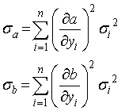
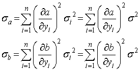
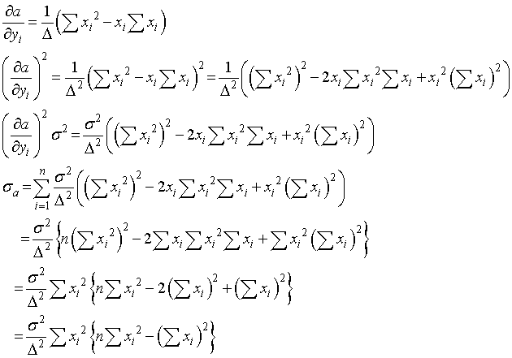
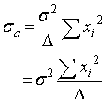
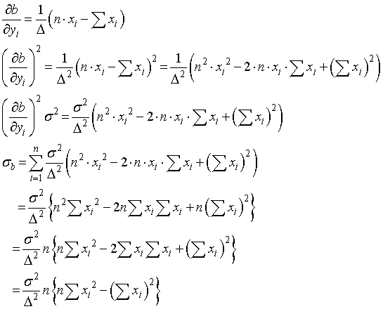
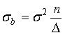

直線近似の場合の誤差の推定（切片を持つ直線近似）
この計算は，このサイト，を参考にさせていただきました，ありがとうござます．
このa，b，の式を誤差伝搬法則における関数，ｆ，と考えれば，それぞれの誤差は，

を計算すればいいわけです．
ここで，σiはそれぞれのセットにおける誤差です．

と書き換えられます（σはそれぞれのセットの誤差の和です）．
aの計算は，

さて，ここで波括弧の中身は．．．Δですね!ですので，

と非常に簡単な形となります．
ｂの計算は，

さて，上と同様に，ここで波括弧の中身は．．．Δですね!ですので，

とこれまた非常に簡単な形になります．